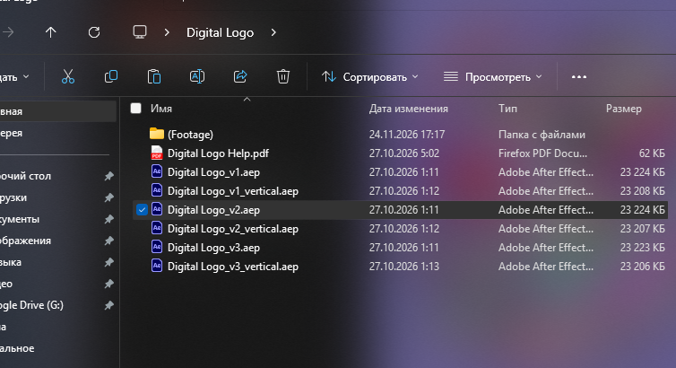
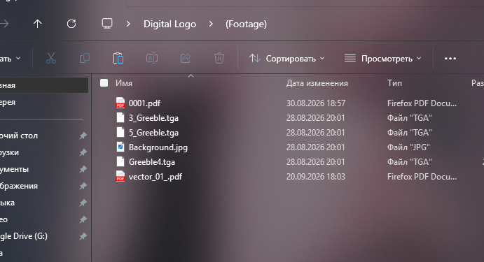
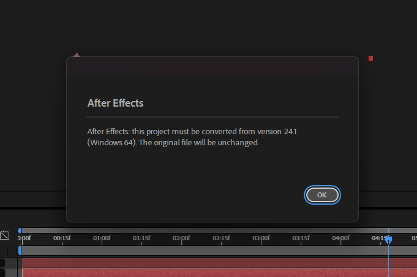
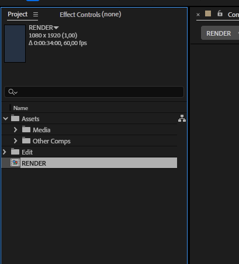
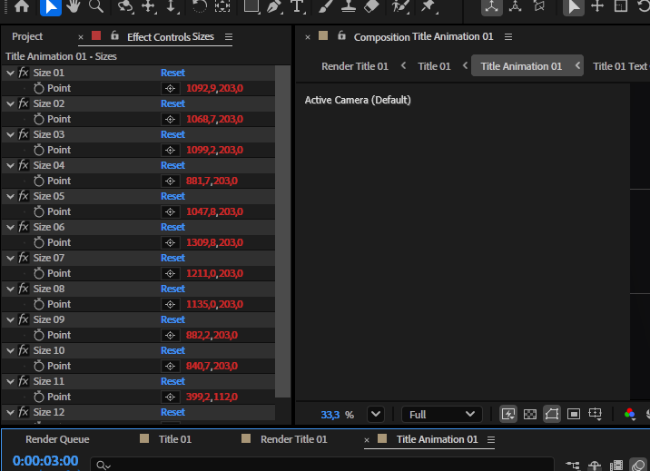
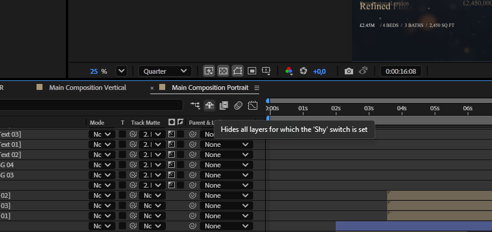
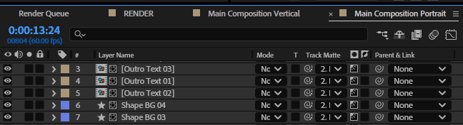
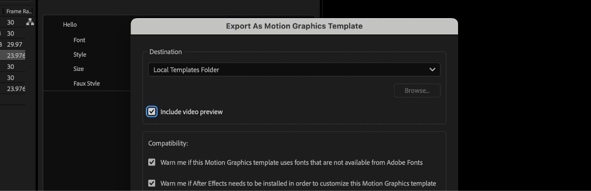

Работа с готовыми шаблонами в After Effects
Готовый шаблон — это проект, в котором уже придуманы композиция, движение и связи между элементами. В нём можно заменить текст и изображения, а можно взять работающую конструкцию и существенно изменить её под свою задачу. Чтобы результат оставался управляемым, сначала нужно понять, где находится контент, где собирается анимация и какие настройки автор предусмотрел для редактирования.
Представим задачу: из готового проморолика нужно сделать короткий анонс выставки. В исходном превью — крупные английские заголовки, фотографии, быстрые переходы и яркий акцентный цвет. Для выставки понадобятся кириллица, другой ритм, свои изображения, дата и место проведения. Работа начинается ещё до замены первого слова: подходит ли сама структура ролика для этой информации?
Что именно мы называем шаблоном
В After Effects слово «шаблон» используют для разных вещей. Иногда это законченный ролик с местами для подстановки контента. Иногда — набор сцен, титров и переходов, из которых ещё предстоит собрать последовательность. Иногда — один эффект появления логотипа. Поэтому два проекта с одинаковым количеством композиций могут требовать совершенно разного объёма работы.
| Формат | Что внутри | Как с ним работают |
|---|---|---|
| AEP | Проект After Effects: композиции, слои и ссылки на исходные файлы. | Открывают или импортируют в другой проект, изучают структуру и редактируют. |
| AET | Файл проекта, сохранённый как шаблон. | Используют как исходную заготовку для новой работы, затем сохраняют рабочий проект отдельно. |
| MOGRT | Motion Graphics template с предусмотренными автором настройками. | Часто используют для редактируемой графики в Premiere. Набор доступных изменений зависит от устройства шаблона. |
| FFX | Animation Preset: сохранённые свойства, эффекты и анимация. | Применяют к подходящему слою. Пресет сам по себе не содержит весь ролик. |
| Готовое видео | Уже рассчитанное изображение. | Монтируют и обрабатывают как видеоматериал. Слои и внутренние настройки исходного проекта в него не входят. |
Даже внутри AEP часть картинки может быть заранее отрендерена. Например, дым, ткань, сложный 3D-объект или частицы могут оказаться видеопроходом. Такой элемент можно кадрировать, смешивать и корректировать, но изменить его геометрию через отсутствующие исходные слои не получится. Надпись «всё настраивается» нужно сопоставлять с конкретным списком редактируемых элементов.


Превью, исходники и условия использования
Сохраните ссылку на шаблон, имя автора, документацию и подтверждение лицензирования. Условия использования самого проекта, музыки, фотографий и шрифтов проверяют отдельно. Наличие элемента в рекламном превью не подтверждает право использовать его в своей работе. Например, Envato прямо обращает внимание на сторонний контент, который авторы могут использовать только для демонстрации. Описание лицензии и демонстрационного контента.
Передача готового видео и передача редактируемого проекта — разные способы использования материала. Если клиенту нужен исходник, заранее проверьте условия конкретной площадки и ассетов. Не переносите правила одной библиотеки на другую. Для публикации разбора также отделяйте собственные решения от устройства исходного шаблона: укажите, на чём основана работа и что именно было изменено.
Первое открытие: сначала восстановить исходный результат
При первом открытии не стоит одновременно заменять шрифты, удалять эффекты и сокращать сцены. Сначала нужно понять, воспроизводится ли исходный проект. Найдите финальную композицию по инструкции автора, посмотрите несколько ключевых кадров и короткий фрагмент движения. Если результат уже отличается от превью, выяснить причину сейчас проще, чем после десятков правок.
| Что сообщает проект | Что это может означать | Первое действие |
|---|---|---|
| Missing Footage | Потеряна ссылка на исходный файл. | Проверить распакованный архив и указать существующий исходник. |
| Missing Fonts | Недоступен шрифт, которым набран текст. | Найти информацию о шрифте в документации и проверить условия его получения. |
| Missing Effects | В проекте есть эффект, которого нет в этой установке AE. | Сопоставить название с требованиями шаблона и определить его роль в изображении. |
| Ошибка expression | Выражение не может вычислить значение. | Прочитать текст ошибки и найти конкретный слой или параметр, на который оно ссылается. |
| Проект не открывается в этой версии | Формат проекта создан более новой версией AE. | Проверить совместимость и наличие подходящей версии у автора. |

Не каждое предупреждение одинаково влияет на кадр. Потерянный аудиофайл может убрать музыку, а недоступный генератор частиц — существенную часть изображения. Важно установить зависимость между сообщением и видимым результатом. Отключение проблемного слоя иногда помогает диагностировать причину, но само по себе не восстанавливает задуманную сцену.
Как восстановить потерянные файлы
В Project найдите отсутствующий элемент и укажите правильный файл через Replace Footage → File. Это восстанавливает связь существующего элемента с медиа. Если рядом находятся другие недоступные файлы с сохранённой структурой папок, AE может найти и часть из них; после операции всё равно проверьте список и результат. Восстановление связей и замена ассетов: Adobe.
Не подменяйте отсутствующее видео похожим по названию без проверки. У файла могут отличаться длительность, размер кадра, частота кадров или альфа-канал. Сцена может открыться без предупреждений и при этом выглядеть неправильно. Для последовательности изображений важно выбрать именно последовательность, а не один кадр.
Если в скачанном архиве нужного файла нет, проверьте документацию: возможно, это демонстрационная фотография или музыка, которые автор не распространяет. Такой элемент следует заменить собственным материалом. Если же отсутствует обязательный пререндер, без него часть оформления может не воспроизводиться — тогда понадобится полная поставка или другой вариант проекта.
Как читать структуру чужого проекта
Панель Project показывает библиотеку элементов. Timeline показывает слои открытой композиции. Одна и та же композиция может встречаться в нескольких сценах, а один исходный файл — использоваться десятки раз. Чтобы понять проект, полезнее проследить путь одного изображения до финала, чем открывать все папки подряд.
Названия вроде FINAL, RENDER, EDIT, PLACEHOLDERS и DO NOT TOUCH — соглашения конкретного автора. After Effects не назначает папке специальное поведение из-за её имени. Слово Render не делает композицию автоматически финальной, а надпись Do not touch не заменяет объяснения её устройства.
Ниже — условная схема, а не структура определённого скачанного проекта. В реальном шаблоне переход может находиться снаружи сцены, текст — в отдельной прекомпозиции, а контроллер — управлять несколькими эпизодами сразу. Двойной щелчок по слою вложенной композиции помогает перейти внутрь и проследить эти связи. Прекомпозиция позволяет обрабатывать группу слоёв как один элемент в родительской сцене. Вложенные композиции в справке Adobe.
Финальная композиция
├─ Сцена 01
│ ├─ Контроллеры
│ ├─ Текст
│ ├─ Композиция с изображением
│ │ └─ Исходная фотография
│ └─ Переход и декоративные элементы
├─ Сцена 02
└─ Финальная карточкаДля первого прохода ответьте на четыре вопроса: откуда рендерить, где менять текст, где менять медиа и где находятся общие настройки. После этого изучайте внутренности конкретной сцены. Такой порядок удерживает связь между сеткой проекта и изображением, которое видит зритель.

Контроллеры, выражения и скрытые слои
Выберите слой с названием Control, Settings или похожим и посмотрите Effect Controls. Там могут находиться регуляторы цвета, размера, отступов, скорости и переключатели вариантов. Это удобные точки входа: автор уже связал их с другими элементами через expressions. Если цвет возвращается после ручной правки, возможно, нужное значение вычисляет выражение или переопределяет другой уровень управления.

Следите за тем, что именно выбрано: слой внутри исходной композиции или экземпляр этой композиции в родительской сцене. В последнем случае могут быть доступны Essential Properties со своими значениями. Поэтому одинаково названный элемент иногда выглядит по-разному в двух местах проекта.
Часть технических слоёв может быть скрыта из списка переключателем Shy; на них также могут стоять блокировки. Отсутствие слоя в текущем списке не означает, что он удалён. Для изучения можно временно показать скрытые слои, но массово снимать связи, блокировки и выражения не стоит: это разрушает объяснимость проекта.

Отключайте элементы последовательно. Например, сначала выключите декоративный блик и посмотрите, какая часть картинки исчезла. Затем верните его и проверьте фон. Если одновременно выключить всё непонятное, результат перестанет подсказывать, что за что отвечает. Режим Solo тоже используйте осторожно: изолированному слою могут понадобиться другие элементы сцены.
Замена фотографий, видео и логотипа
Сначала определите масштаб замены. Если требуется изменить медиа во всех местах использования одного элемента, подходит замена исходника в Project. Если нужно изменить только одну конкретную сцену, удобнее работать с её слоем или отдельным плейсхолдером. Это разные операции: глобальная замена может неожиданно затронуть другие кадры. Устройство footage items и замены исходников.

Плейсхолдер — место для контента. Часто это отдельная композиция, внутри которой лежит фотография или видео. Вставьте свой материал в нужный плейсхолдер и настройте его кадрирование там. Так внешняя анимация рамки, маски и перехода сможет продолжить работать независимо от размеров нового файла.
Чтобы заменить источник конкретного слоя, выделите этот слой в Timeline, затем перетащите новый элемент из Project на него с зажатой Alt в Windows или Option в macOS. Проверьте результат на рабочей копии. Это отличается от Replace Footage в Project: там меняется общий исходный элемент, а здесь — источник выбранного слоя.
Замена источника слоя с сохранением его места в Timeline полезна, когда нужно оставить существующую анимацию. Но сохранённые числовые параметры не гарантируют одинаковую картинку: у нового файла могут быть другие габариты, положение объекта и прозрачные поля. После замены проверьте масштаб, Anchor Point, маски и начало воспроизведения.
Для фотографии важно выбрать между заполнением и сохранением всего кадра. Портрет можно обрезать под широкое окно, но лицо не должно случайно оказаться за текстом. Для видео дополнительно проверьте, какой момент клипа виден в сцене и хватает ли материала на её длительность. Даже хороший клип может не подходить по направлению движения или расположению смыслового центра.
У логотипа часто встречается другая проблема: большое прозрачное поле вокруг самого знака. При одинаковом размере файла такой логотип визуально оказывается меньше. Проверяйте видимую графику и её положение, а также тёмный и светлый варианты знака. Белый прямоугольник в JPEG не станет прозрачным после импорта.
Изменение пропорций кадра
Горизонтальный ролик нельзя считать готовым вертикальным только после изменения Width и Height. Изображения могут обрезаться, текст — выйти за границы, а акцент — оказаться слишком близко к краю. Масштабирование всей сцены иногда даёт приемлемую черновую версию, но не заменяет перестройку композиции.
Для вертикального анонса сначала разложите ключевые статичные состояния: главный кадр, информационный блок и финал. Затем проверьте анимацию между ними. Возможно, вместо широкой строки потребуется несколько строк, вместо двух изображений рядом — последовательное появление, а направление перехода лучше изменить.
Сохраните отдельную финальную композицию для каждого формата и решите, какие элементы остаются общими. Общие источники удобно обновлять один раз, а положение и масштаб в кадре могут различаться. Если точечные правки для вертикали начинают ломать горизонтальную версию, это признак неразделённых уровней контента и компоновки.
Как искать причину поломки
| Симптом | Что проверить |
|---|---|
| Цвет сразу возвращается | Выражение, общий контроллер и Essential Properties экземпляра. |
| Новая картинка изменилась во всех сценах | Общий footage item или вложенная композиция. |
| Изображение видно внутри, но не видно в финале | Время слоя, маску или matte, Opacity, родительскую сцену и положение относительно кадра. |
| После замены логотип слишком маленький | Прозрачные поля файла, масштаб плейсхолдера и видимые габариты знака. |
| Текст обрезан | Размер вложенной композиции, маску, абзацный блок и анимацию по символам. |
| После удлинения сцены появилась пустота | Duration источника, Out Point и последний видимый кадр видео. |
| Пропала часть оформления | Недоступный эффект, пререндер, выключенный слой, зависимость от matte. |
| Слишком медленное превью | Разрешение просмотра, тяжёлые эффекты и вложенные сцены; затем проверить короткий полный рендер. |
Выберите один кадр, где ошибка хорошо видна, и изменяйте по одному условию. Например, временно уберите маску, проверьте источник и верните маску. Не исправляйте одновременно цвет, время и структуру сцены: будет трудно понять, какая операция помогла.
Низкое разрешение предпросмотра помогает работать быстрее, но мелкие линии и края нужно оценить в полном качестве. Кеширование не исправляет структуру проекта и недоступные зависимости. Перед большой серией рендеров полезно проверить один сложный эпизод целиком.
Три уровня: контент, управление и оформление
Контент — то, что меняют от выпуска к выпуску: текст, фотография, видео, логотип. Управление — доступные настройки: цвет, отступ, вариант компоновки, наличие подписи. Оформление и движение — слои, которые реализуют эти настройки и собирают кадр.
Если каждый из шести декоративных слоёв требует вручную менять один и тот же цвет, управления ещё нет. Если один регулятор одновременно перекрашивает фон, фотографию и белый текст, управление есть, но его смысл выбран неудачно. Хороший параметр соответствует понятному решению пользователя: «акцент», «фон», «показать подпись», «вариант расположения».
CARD_MASTER
├─ CTRL — общие настройки этой карточки
├─ TITLE — основной текст
├─ SUBTITLE — дополнительная подпись
├─ MEDIA — заменяемое изображение
└─ DESIGN — подложка, маски и анимацияНазвания здесь условные. Их смысл в том, чтобы человек мог быстро найти место редактирования. Файл с десятками универсальных параметров «Slider 1» и «Slider 2» хуже подготовлен к повторному использованию, чем компактный модуль с пятью ясными настройками.
Контроллеры через Expression Controls
Создайте Null Object и назовите его CTRL. Добавьте нужные эффекты из Expression Controls: Color Control для цвета, Slider Control для числа, Checkbox Control для переключателя, Dropdown Menu Control для выбора варианта. Эти эффекты предоставляют значения; изменение картинки появляется после связи с нужными свойствами через выражения. Expression Controls в справке Adobe.
Для небольшой карточки достаточно четырёх настроек: Accent, Padding, Logo Size и Show Subtitle. Переименовывайте сами эффекты, чтобы названия выражали их назначение. У чисел укажите рабочий диапазон и единицы в подписи или инструкции. «Отступ, px» понятнее, чем «Плотность», если параметр на самом деле управляет расстоянием в пикселях.
Например, цвет заливки шейпа можно связать с Color Control, переименованным в Accent:
thisComp.layer("CTRL").effect("Accent")(1)Здесь имя CTRL определяет слой, Accent — эффект на нём, а индекс 1 выбирает его первое свойство. Создать такую ссылку удобно через expression pick whip. Приведённые имена должны совпадать с именами в вашем проекте; при переименовании и копировании проверяйте, куда ведёт ссылка.
Для Opacity дополнительной подписи можно использовать Checkbox Control с именем Show Subtitle. Включённый переключатель сохраняет исходное значение свойства, в том числе его ключевую анимацию; выключенный скрывает слой:
thisComp.layer("CTRL").effect("Show Subtitle")(1) ? value : 0Для Scale двумерного слоя логотипа настройка Logo Size может задавать равномерный масштаб. В этом примере допустимое значение ограничено прямо в выражении:
k = thisComp.layer("CTRL").effect("Logo Size")(1);
k = Math.max(20, Math.min(200, k));
[k, k]Этот вариант заменяет исходный Scale, поэтому ключи появления на том же свойстве потребуют отдельного решения. Удобнее разделить масштаб настройки и анимационный масштаб, например через родительский Null. Иначе попытка управлять размером может уничтожить первоначальный принцип движения.
Когда нужен MOGRT и как его подготовить
Если менять карточки будет монтажёр в Premiere, можно подготовить MOGRT с доступными ему параметрами. В After Effects через Essential Graphics выбирают основную композицию, добавляют поддерживаемые свойства, понятные названия и пояснения, затем экспортируют Motion Graphics template. Сам AEP при этом остаётся исходным проектом разработки. Создание MOGRT в документации Adobe.
Доступные изменения определяет автор шаблона. Если нужен редактируемый текст, нужно предоставить соответствующую настройку; если нужна замена изображения, подготовить поддерживаемый media replacement. Экспорт не превращает произвольную композицию в универсальный конструктор. Проверьте ограничения используемых свойств, зависимости и совместимость целевых версий.
После экспорта протестируйте файл именно там, где с ним будут работать: вставьте MOGRT в Premiere, измените все предоставленные настройки, попробуйте несколько длительностей и выполните короткий экспорт. Успешная работа внутри AE не заменяет такой проверки. Если повторное использование происходит только в After Effects, хорошо организованного AEP или AET с подготовленными параметрами может быть достаточно.

Как проверить собственный шаблон
Тестируйте конструкцию на содержании, которое отличается от идеального демо. Самый красивый исходный заголовок обычно не выявляет проблем. Нужны ситуации, в которых система вынуждена применить свои правила.
| Проба | Что она проверяет |
|---|---|
| Очень короткий и длинный заголовок | Минимальную и максимальную ширину, переносы и поля. |
| Кириллица, цифры, знаки и две строки | Набор символов шрифта, базовую линию и вертикальную компоновку. |
| Отсутствующая дополнительная подпись | Скрытие её оформления и перераспределение свободного места. |
| Светлая и тёмная фотография | Читаемость текста, границы и контраст. |
| Портрет, широкий кадр, логотип с полями | Правила кадрирования и ограничения масштаба. |
| Минимальное и максимальное значение регулятора | Рабочие диапазоны и отсутствие разрушительных настроек. |
| Два экземпляра одного модуля | Независимость подготовленных значений и отсутствие случайных общих ссылок. |
| Короткая и длинная версия | Появление, удержание, уход и реальное время чтения. |
Запишите границы применения. Например: до двух строк заголовка, одна фотография, два варианта фона и три допустимых формата. Ограниченный, но предсказуемый шаблон полезнее конструкции, которая обещает принять любой контент и требует ручного ремонта после каждой замены.
Сборка проекта, передача и архив
Сохраните чистую версию шаблона и отдельный пример заполнения. В инструкции укажите главную композицию, места замены контента, доступные настройки, версию AE, зависимости, шрифты, способ рендера и известные ограничения. Для собственной системы полезно описать и то, какие элементы остаются общими между экземплярами.
Для сбора связанных исходников используйте File → Dependencies → Collect Files с подходящей областью сбора. Команда помогает собрать копии файлов, на которые ссылается проект. Она не устанавливает плагины на другую машину и не превращает лицензируемые шрифты в свободно распространяемые ассеты. Условия передачи сторонних материалов нужно учитывать отдельно. Импорт проектов и Collect Files.
Откройте проект из собранной папки и проверьте, откуда читаются файлы. По возможности протестируйте на машине получателя. Передавайте короткое превью рядом с исходниками: оно показывает, как должен выглядеть корректный результат. В финальном видео проверьте начало и конец, текст, прозрачность при необходимости, звук и соответствие выбранной композиции.
Храните версии по смыслу: исходная поставка, адаптация, чистый шаблон, заполненный пример и экспорт. Это позволяет вернуться к работающей конструкции и понять, какие изменения относятся к конкретному заказу. Если дизайн существенно меняется, лучше обозначить новую версию системы, чем незаметно обновить старый файл и сделать предыдущие выпуски невоспроизводимыми.
Последовательность работы от скачивания до собственного модуля
- Проверить соответствие задаче. Содержание, ритм, технические требования и состав поставки.
- Открыть рабочую копию. Прочитать инструкцию, восстановить зависимости и сравнить исходное воспроизведение с превью.
- Найти точки редактирования. Финал, сцены, плейсхолдеры, текст и общие контроллеры.
- Адаптировать одну сцену. Проверить изображение, кириллицу, длину текста и характер движения.
- Собрать весь ролик. Настроить иерархию, монтаж, длительность и необходимые форматы.
- Выделить повторяемый модуль. Отделить контент, управление и внутреннее устройство.
- Подготовить параметры. Создать понятные контроллеры и при необходимости подготовить MOGRT.
- Проверить крайние случаи. Разный контент, два экземпляра, короткую и длинную версии.
- Собрать и передать. Исходники, инструкцию, зависимости и контрольное превью.
Критерий завершённости собственного шаблона — возможность повторить результат с другим содержанием через предусмотренные настройки. Если для каждой новой карточки приходится вспоминать, в какой прекомпозиции спрятана нужная правка, конструкцию ещё стоит упростить.